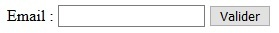
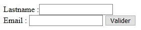

Délégation d'événement
Objectif
- Ajouter un écouteur d'événement avec on()
- Déléguer un événement
Mise en situation
La programmation événementielle réserve quelques surprises. Imaginons créer un écouteur d'événement click sur les boutons de notre site. Si nous rajoutons dynamiquement d'autres boutons, ceux-ci ne seront pas reliés à notre écouteur.
Le rôle de la délégation d'événement est précisément de résoudre cette problématique.
Méthode on()
Méthode
La délégation avec jQuery implique l'utilisation d'une autre méthode d'ajout d'écouteur d'événement que celle vue dans le chapitre précédent. Nous utiliserons on() avec deux paramètres :
- le nom de l'événement,
- une fonction anonyme contenant le code à exécuter.
Reprenons le formulaire créé précédemment.
See the Pen Untitled by OpenSpirit (@OpenSpirit) on CodePen.

De la même manière, le message d'alerte s'affichera quand le focus se fera sur le champ email.
Délégation
Méthode
Pour déléguer un écouteur d'événement, la méthode on() accepte un nouveau paramètre : l'élément sur lequel déléguer, qui se placera en seconde position.
Considérons l'écouteur focus placé sur les éléments input sans délégation.
Dans un premier temps, seul le champ email est présent dans le formulaire.
See the Pen Untitled by OpenSpirit (@OpenSpirit) on CodePen.
Ajoutons dynamiquement le champ lastname grâce à preprend. Dans ce cas, le message d'alerte s'affichera au focus sur le champ email, mais pas sur le champ lastname.
Avec la délégation :
See the Pen Untitled by OpenSpirit (@OpenSpirit) on CodePen.
Le message d'alerte s'affiche bien au focus sur le champ lastname.
Fondamental
Pour que la délégation fonctionne, l'écouteur a été placé sur le parent direct des éléments input. $('input').on('focus', function() {}) est devenu : $('#form').on('focus', 'input', function() {}).
Autrement dit, l'écouteur est placé sur le parent et sera délégué par celui-ci aux éléments input.
Conseil
Pour optimiser l'exécution du script, la délégation doit se faire sur le parent le plus proche non créé dynamiquement.
À retenir
Syntaxe
- Pour déléguer un écouteur d'événement, la méthode on() doit être utilisée : on('event', 'element', function(){}).